jenna casey
Jenna is a senior currently studying Graphic Design at Virginia Commonwealth University (VCU). She is a double minor: Art History, and Risk Management & Insurance. Her practice is focused heavily on the importance of research in both the design and iterative processes. She hopes to incorporate more historical based work, and writing elements, into her practice. She also has the hopes of including historical queer culture into her work—giving voices to those that no longer have them. Her work has been shown in Italy, North Caolina, South Carolina, Tennessee, and Virginia. She worked on a research project to redesign the 1755 Mitchell Map to highlight the landmarks of the Cherokee people, exploring her fascination with cartography.
Scales of Indifference
Fall 2024
Exhibition
The Anderson, Richmond, VA
September 20-October 11, 2024
Scales of Indifference initially began as an opportunity to showcase an underrepresented art discipline in a fine arts space. Curators and Graphic Design students, Jenna Casey and Zach Montgomery set out with this in mind, working tirelessly to materialize this vision. Similar to the show’s objective of broadening preconceived notions of time, the variety of media displayed in this space also works to advance perspectives of Graphic Design as an interdisciplinary and unrestricted practice.

 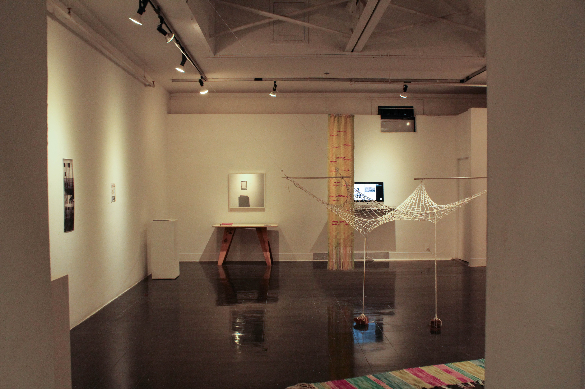
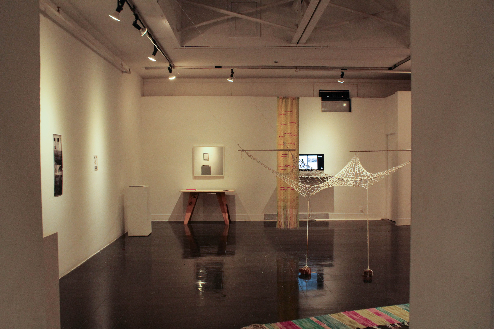


if the streets could talk
Summer 2024
Map
23.4x33.1 inches
This is focusing on the emotional/psychological aspects of studying abroad. I completed a daily writing practice that I accompanied with a map of Florence, overlaying the writings where I was having these moments of reflection. I wanted to focus on the lesser talked about aspects of studying abroad: the emotional setbacks & growth.

 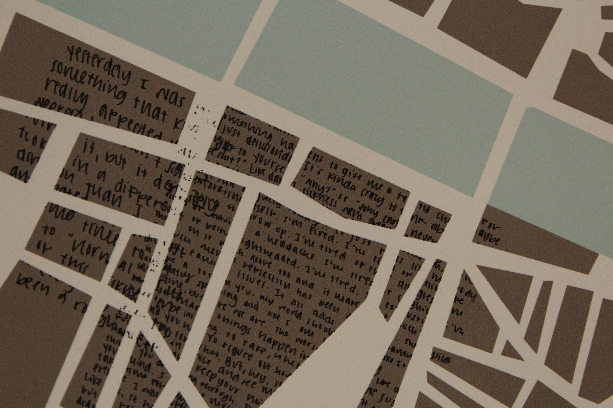
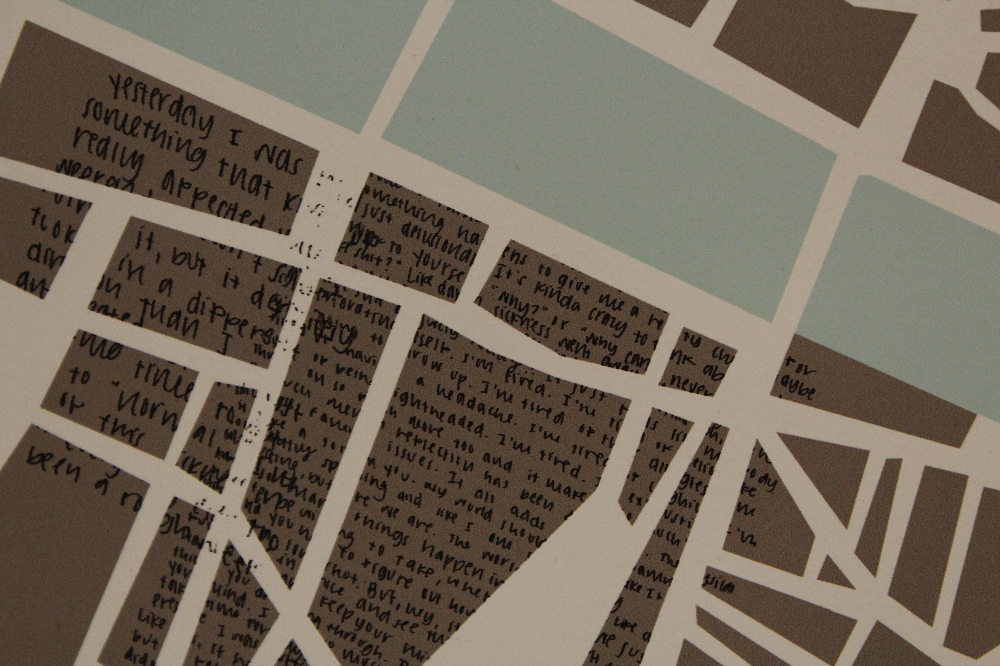

recirculated
Fall 2024
Publication
3x5 inches
Recirculated explores the nature of recirculating a piece of text, and empasizing the design choices that emulate the purpose of the text. This was a republication of chapter 1 of “The Memory Police” by Yoko Ogawa, looking into typefaces that emphasized the plot of the book: your memories being taken from you and you being left with no control over it. The size played off of the idea that this could be a “pocket” book full of your memories — something that can travel with you. The text, "The Memory Police", in a sense shatters what we know as the foundation of our own memory, which is further embodied through the scatteration of the text as the pages progress.

 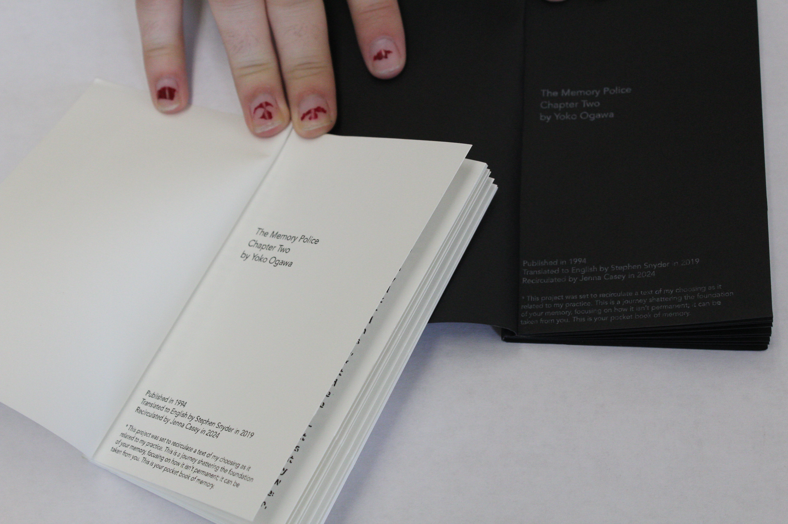
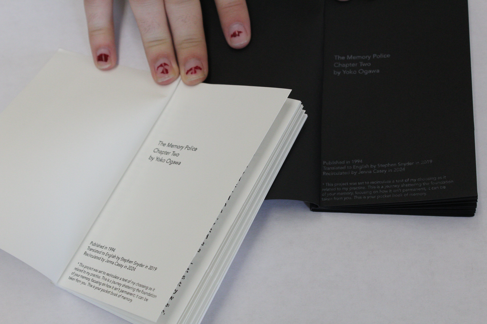
 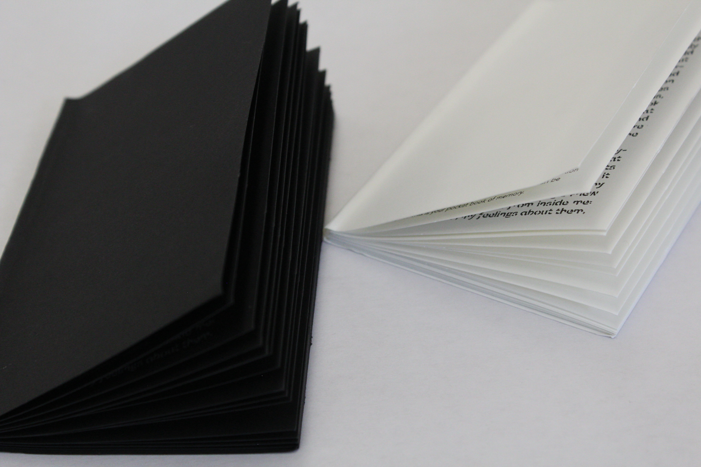
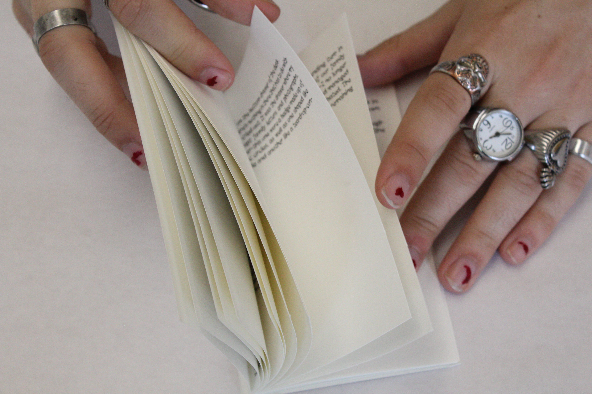
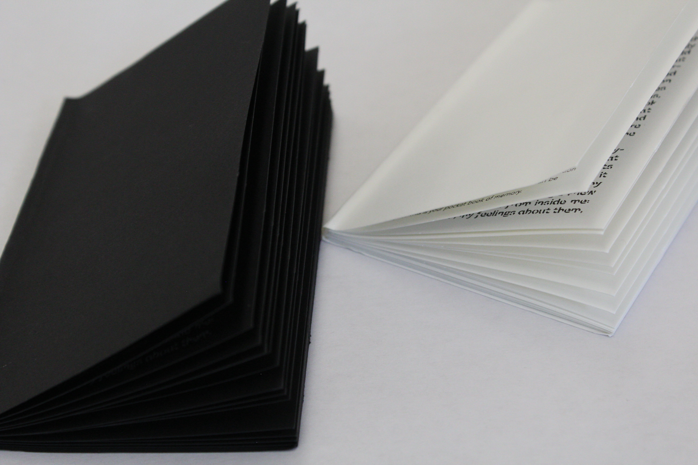
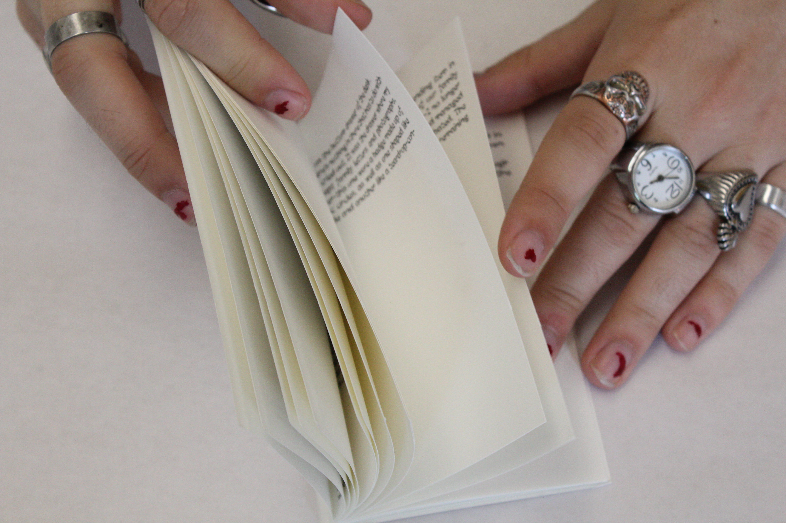
 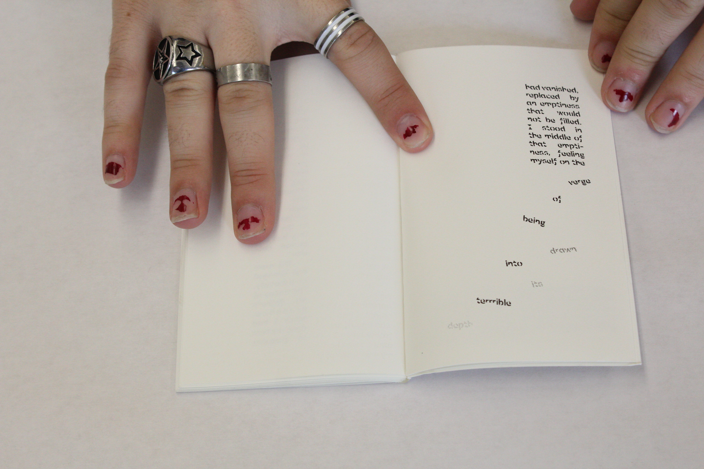
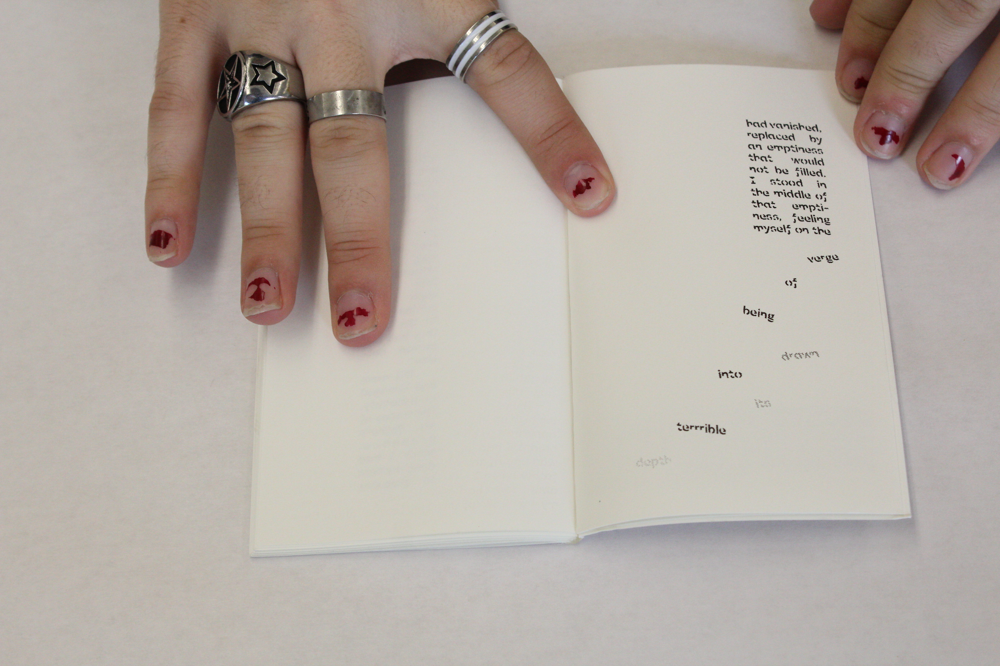